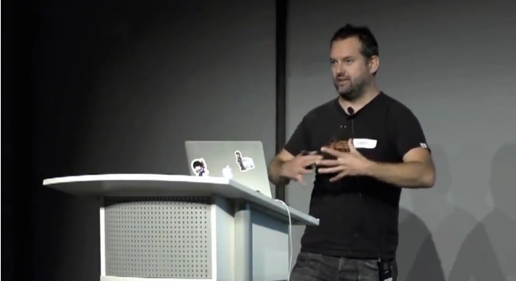

#devoxx@your_twitter
None of this stuff is really new.  What has changed is we developed new patterns and practices and we have new tools that enable us to do this.
- Jez Humble, oct. 2012
build_front.sh :
cd front
docker build --rm -t mepc/front:1 .
run_front.sh :
docker run -d -t -p 2222:22 -p 8080:80 --name front mepc/front
npm install
grunt package deploy
docker run -d -p 8080:80 --name rp hipache
docker run -d --expose 27017 --name db mepc/db
docker run -d --expose 8080 --name app-blue mepc/app:1.0
Every build is a Release Candidate
- Jez Humble
docker build -t mepc/app:1.0 .
docker save -o mepc_app-1.0.tar mepc/app:1.0
curl --data-binary @mepc_app-1.0.tar -H 'Content-type: application/tar' http://10.0.2.2:4243/images/create?fromSrc=-&repo=mepc/app&tag=1.0
curl --data-binary '{"Image":"mepc/app:1.0","ExposedPorts":{"8080/tcp":{}}}' -H 'Content-Type: application/json' \
'http://10.0.2.2:4243/containers/create?name=app-blue'
curl --data-binary '{ "Links": [ "db:db" ] }' -H 'Content-Type: application/json' 'http://127.0.0.1:4243/containers/app-blue/start'